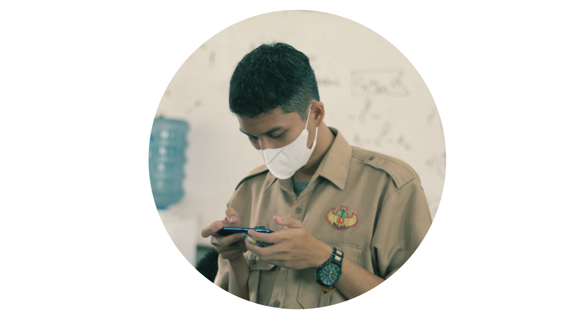

Imam Khadhi
607012330105
D3SI-47-04
Assignment
Perangkat Jaringan Komputer
Perangkat jaringan yang familiar bagi kita sehari-hari yaitu end devices atau host.Perangkat ini memberi bentuk bagi antarmuka/interface antara pengguna dan jaringan komunikasi dasar.Beberapa contoh end device yaitu.
Website ini dibuat atas dasar memenuhi tugas assesment tiga Arsitektur Jaringan Komputer (Arsijarkom). Website ini memiliki isi yaitu profile,materi,dan juga tutorial mengerjakan tugas saat ini.